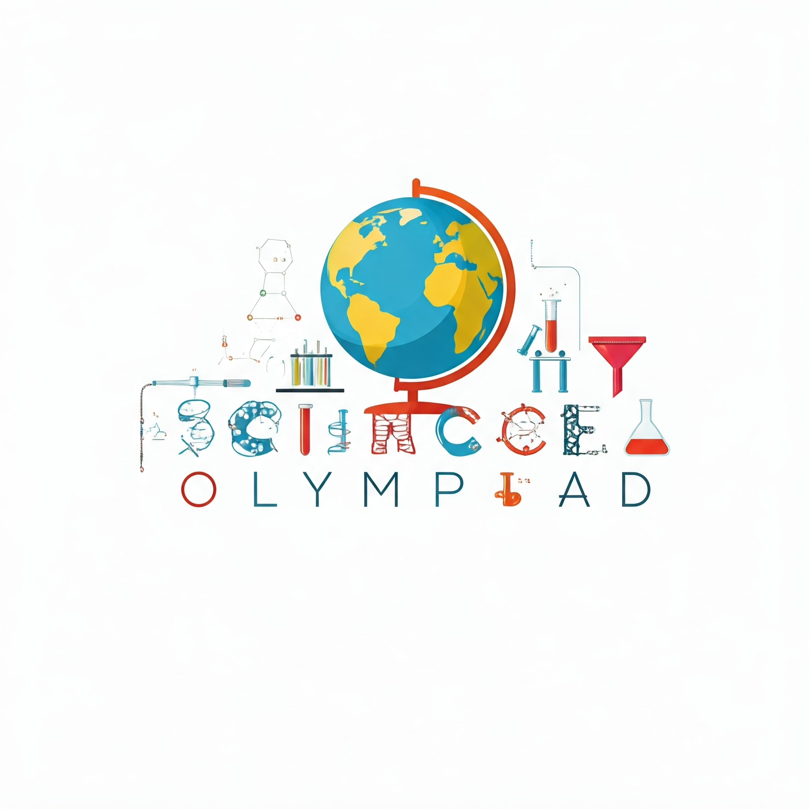

Science Olympiad
|

|
Students use creative scientific techniques to solve problems individually and in teams. Interested students participate in a tryout at the end of 6th grade for the Junior Varsity team placement. The process includes a written test, a build test, and a current science teacher recommendation. Students in 7th grade are recommended by their science teacher to participate in the varsity team tryout, and participation is by invitation only. Seventh graders comprise the Junior Varsity team, and eighth graders comprise the Varsity team. Only the Varsity team may participate in the state competition. Science Olympiad is offered as an elective and may participate in the regional, state, and national tournaments. The Carnage team is consistently in the top three teams in our region and competes in the State Science Olympiad competition held at NCSU. This club is for 7th and 8th grade only. Club Activities
How to JoinStudents in 7th grade are recommended by their science teacher to participate in the varsity team tryout, and participation is by invitation only. Meet the Club AdvisorVenisha Murphy. Reach out at vmurphy@wcpss.net |